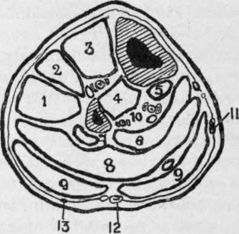

The Leg. Surface Anatomy. Continued
Description
This section is from the book "Surgical Anatomy", by John A. C. MacEwen. Also available from Amazon: Surgical Anatomy.
The Leg. Surface Anatomy. Continued
The peroneus tertius, arising from the lower third of the fibula on its inner aspect, sends its tendon down on the outer-side of that of the extensor digitorum. The branch of the peroneal artery enters the space just above the inferior tibiofibular joint. The anterior tibial nerve lies external to the artery, but may be reached through the same incisions. In the upper third the nerve is a little distance from the artery, but is close to it in the lower two-thirds, and may even overlap it in the middle third.
The peroneal compartment between the two septa contains the peroneus longus and brevis, the musculo-cutaneous nerve, and at its upper end the termination of the external popliteal nerve. Both peronei muscles arise from the outer surface of the fìbula, the longus from the upper two-thirds, and the brevis from the middle two-fourths. The musculocutaneous nerve of the external popliteal lies on the inner surface of the peronei which it supplies, and between them and the extensor digitorum.
The posterior compartment between the external peroneal septum and the inner border of the tibia is wide above, but diminishes as it approaches the ankle. It contains a superficial group of muscles, the gastrocnemius, soleus, and plantaris, which are separated from the deep group, consisting of the flexor longus digitorum, flexor longus hallucis, and tibialis posticus by an intermuscular septum running from the fibula to the tibia. The posterior tibial vessels and nerve, and the peroneal vessels, lie in the deep compartment, superficial to the deep muscles. The gastrocnemius rapidly narrows, and becomes tendinous about the middle of the leg, the soleus remaining fleshy to a lower level. The tendons of the two muscles coalesce to form the tendo Achillis, which is inserted into the posterior part of the os calcis, and is an important landmark. The long thin tendon of the plantaris runs down from without inwards between these two muscles, and is inserted into the os calcis on the inner side of the tendo Achillis.
Fig. 41.-Outline Diagram of Transverse Section of Leg in the Upper Third.
(Modified from Heath.)
1. | Peroneuslong. | 7. | Flex. long, pollicis. |
2. | Ext. long. dig. | 9. | Gastrocnem. (plantaris tendon above figure on right side). |
3. | Tibialis anticus. Ant. tibial vessels and nerve between 3 and 4. | ||
10. | Peroneal vessels on left. Post, tibial vessels and nerve on right. | ||
4. | Tibialis posticus. | 11. | Int. saphenous vein. |
5. | Flex. long. die. | 12. | Ext. saphenous vein and nerve. |
6 and 8. Soleus. | 13. | Communicans peronei nerve. | |
The tendo Achillis is not infrequently ruptured by some unwonted exertion, and the plantaris tendon has been similarly injured, while the gastrocnemius muscle has also been partially torn.
The posterior tibial artery, accompanied by its venae comités, lies between the superficial and deep muscles on the under surface of the deep intermuscular septum, just over the tibialis posticus. The posterior tibial nerve lies at first to the inside of the artery, but about 1½ inches below the popliteus muscle it crosses behind the artery to the outer side. The vessel is deeply placed in its upper two-thirds, and is best reached about the middle of the leg, through an incision on a line from the inner tuberosity of the tibia to a point midway between the internal malleolus and the heel, the patient lying on the back, with the limb everted. The skin and superficial fascia are incised, avoiding the internal saphenous vein and nerve ; then the deep fascia is cut through, and the gastrocnemius drawn backwards and the soleus exposed. The soleus is now divided vertically in the line of the incision, until the vessel is reached lying under the deep fascia. This portion of the operation is difficult, the incision being apt to follow the fibres of the soleus, instead of going vertically through them, while a tendinous intersection in the substance of the soleus is apt to be mistaken for the deep aponeurosis. The tibial margin forms a good guide, the incision being deepened at a uniform distance from it (less than a finger's breadth), until the vessel is reached. In the lower one-third the vessel is comparatively superficial, and lies midway between the inner margin of the tibia and the tendo Achillis. To reach it, an incision in the line of the artery is made through the skin, superficial fascia, deep fascia, and deep fascia covering the deep flexors. The artery lies on the flexor longus digitorum.
The collateral circulation is by calcaneal branches of external plantar with the peroneals and external malleolar of anterior tibial, plantar arteries with dorsalis pedis, internal malleolar of anterior tibial with posterior tibial, and muscular branches of peroneal and posterior tibial.
Aneurism of the posterior tibial is said to be more apt to cause gangrene of the leg than popliteal aneurism, as it presses upon the anterior tibial recurrent, which plays an important part in collateral circulation.
In the upper portion of the leg the deep posterior muscles are arranged with the tibialis posticus placed centrally, springing from the interosseous membrane and tibia and fibula, while the flexor hallucis, springing from the fibula, lies to the outer side, and the flexor digitorum, springing from the tibia, lies to the inner side. Near the ankle the tendon of the tibialis posticus passes under that of the flexor digitorum, and is thus above, or anterior to, the others. Next to it comes the flexor digitorum tendon, then the artery and its venae comités, then the nerve, and finally the flexor hallucis lies lowest, or most posterior.
The peroneal artery, arising about 1 inch below the end of the popliteal, inclines out to the posterior surface of the fibula, and descends in or beneath the flexor longus hallucis, close to the interosseous membrane. Just above the ankle it divides into anterior and posterior peroneal arteries, of which the anterior enters the anterior compartment, through the interosseous membrane, to anastomose with branches of the anterior tibial, and the posterior descends posteriorly to anastomose with the anterior malleolar and tarsal vessels. The peroneal also supplies muscular branches, and the nutrient artery to the fibula. While all the vessels of the lower limb are apt to be injured in fracture, the peroneal is particularly so, owing to its close relationship to the fibula and its comparative fixation.
Continue to: